Grupo de investigación · Universidad de Málaga
Cómo funciona el lenguaje, cómo se altera y cómo se recupera
La Unidad de Neurociencia Cognitiva y Afasia (UNCA) estudia cómo funciona el lenguaje, cómo se altera tras una lesión cerebral y cómo se recupera. Trabajamos con personas con afasia y con personas sin daño cerebral, y combinamos la evaluación clínica y neuropsicológica, las tareas experimentales y la neuroimagen.
Novedades
Todas las noticias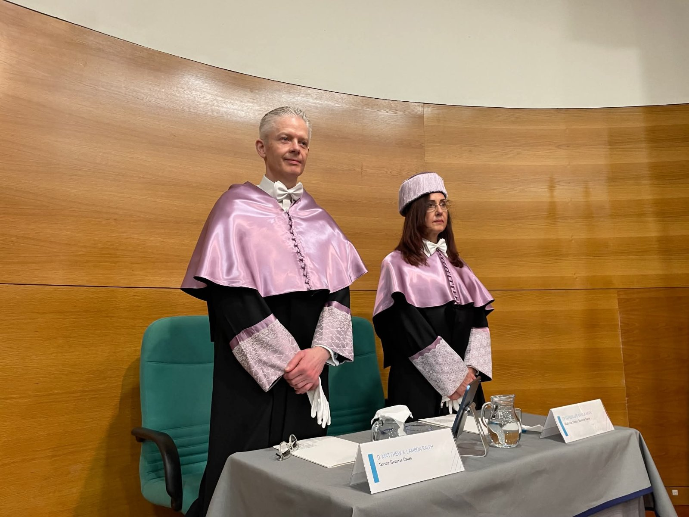
La Universidad de Málaga inviste doctor honoris causa a Matthew Lambon Ralph, referente internacional en afasia
Leer más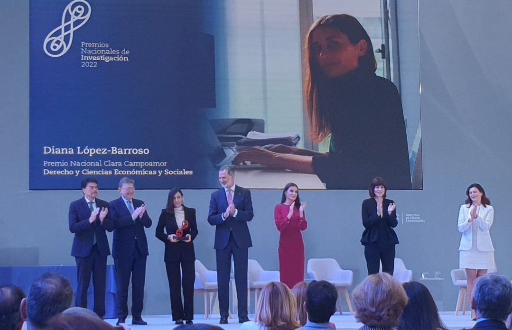
Diana López Barroso, galardonada con el Premio Nacional de Investigación para Jóvenes Investigadores
Leer más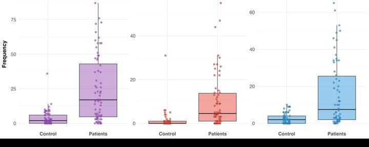
Charla en el congreso de la SANP 2026 (Málaga)
Ver más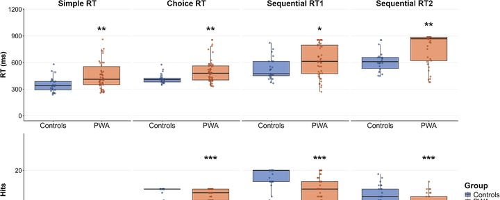
Déficits de atención visual en la afasia postictus
Leer más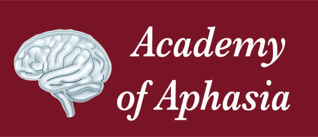
Reseña: la Academy of Aphasia 2026
Leer más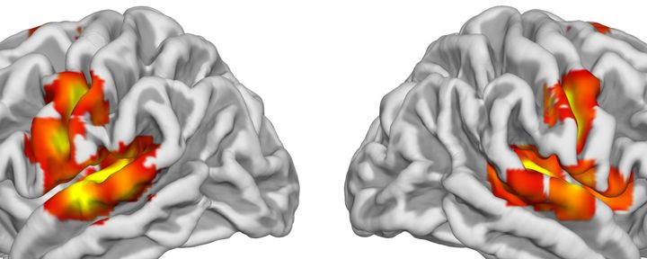
Metaanálisis de los patrones cerebrales de la repetición verbal
Leer más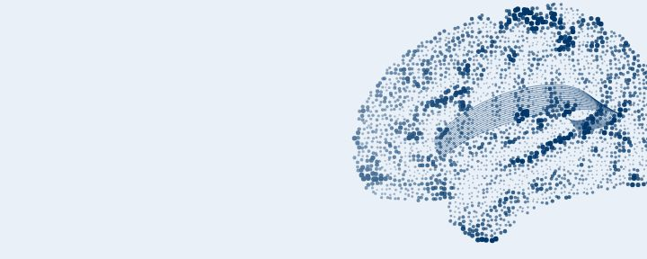
Nuevo artículo en Aphasiology sobre la conducta de aproximación
Leer más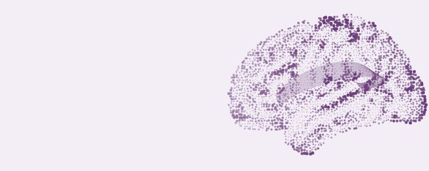
Ismael Gutiérrez Cordero defiende su tesis doctoral
Leer más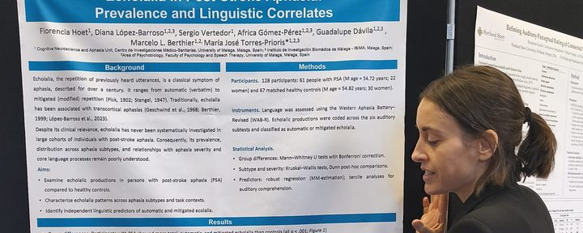
Presentaciones en la Academy of Aphasia 2026 (Lieja)
Ver más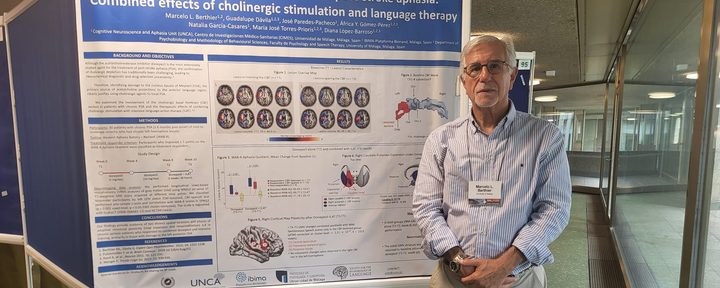
Presentaciones en la SNL 2026 (Ginebra)
Ver más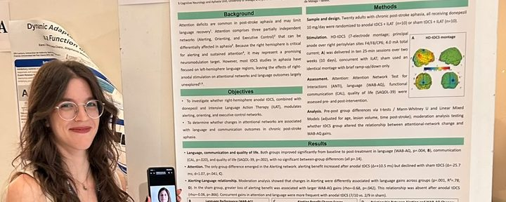
Presentación en el II Joint Meeting SEPEX–BAPS 2026 (Valencia)
Ver másPAIDI CTS-994IBIMA C12CIMES Universidad de MálagaUMA Facultad de Psicología y Logopedia
Participa en nuestros estudios
Buscamos personas con y sin afasia para participar en nuestros estudios sobre el lenguaje y su recuperación.